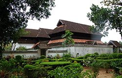

Ajith D
Ammelil
Keerikkadu South,
Kayamkulam P.O,Alappuzha
pin:690502
Hai...Im Ajith
My native place is kayamkulam
Click here to visit kayamkulam
Studying at College of Engineering and Management,Punnapra
Click here to visit my college
I have a younger brother
Now i will tell about my place
Kayamkulam is a municipal town in Alappuzha district of Kerala in Indian state. Located on the western coast of India, it was an ancient maritime trading centre. One of the largest thermal power plants in Kerala, the Rajiv Gandhi Combined Cycle Power Plant run by the NTPC, is situated in Kayamkulam.
Click here to view details about NTPC
Krishnapuram Palace is located nearby. Many old cashew factories can also be seen in the locality.
